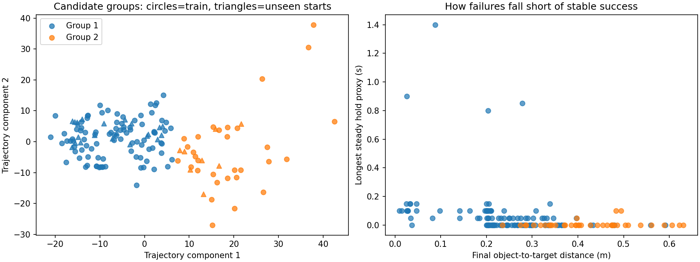
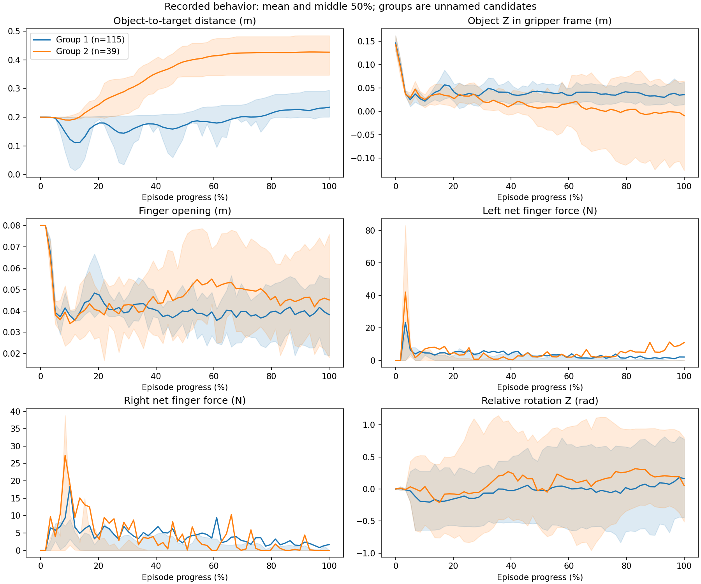
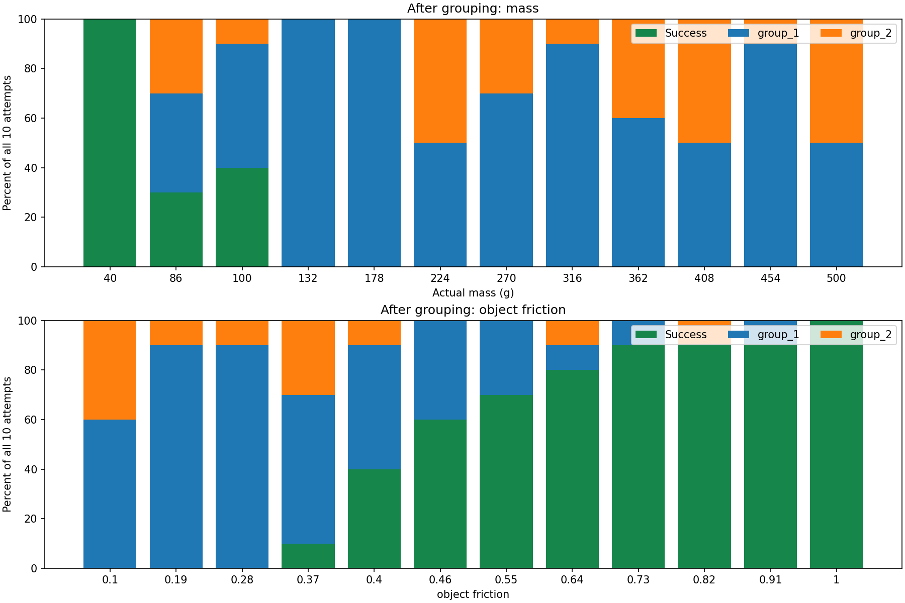
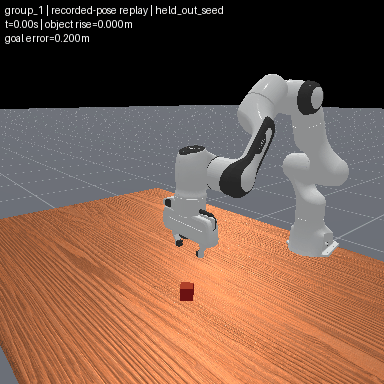
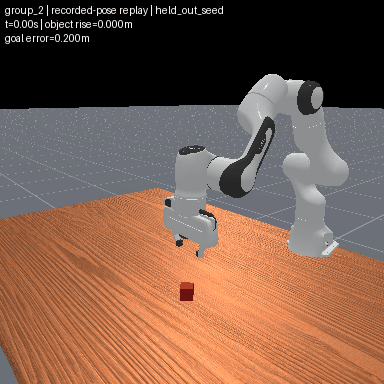

# Failure discovery pilot
Analyzed 230 saved episodes: 154 original failures and 76 original successes.
Found **2 candidate behavior groups**. These are not verified physical failure types.
- Failure group sizes: {'group_1': 115, 'group_2': 39}. Small groups may be outliers rather than failure types.
- Held-out silhouette: 0.2671049610454707. Higher indicates more separated groups; negative indicates overlap.
- Mean seed-subset agreement (ARI): 1.0. One means identical assignments up to group names; zero is chance-level agreement.
- Seed-subset refits collapsing to one held-out group: 0/8.
- Stable-success proxy: 69 episodes. This uses provisional thresholds and does not replace original success.
See scores.json for all assumptions and limitations. Next: inspect representatives, check threshold sensitivity, and reproduce groups on a larger sample. Physical settings are revealed in separate CSVs after grouping; no causal conclusion is established.


Episode metrics · Scores and assumptions · Representative episodes
# First failure-identification test
230 attempts; 154 failures. Physical settings and existing failure names were excluded from clustering.
Candidate groups: {'group_1': 115, 'group_2': 39}. Five seed-split checks give mean reference-assignment ARI 0.919. ARI measures grouping agreement, not correctness of failure names.
## What the groups look like
- group_1: 115 failures; median peak object rise 19.4 cm; median final sideways displacement 12.0 cm. 82/115 rise above 5 cm.
- group_2: 39 failures; median peak object rise 1.3 cm; median final sideways displacement 35.4 cm. 7/39 rise above 5 cm.
These are broad trajectory groups with overlap, not yet clean, mutually exclusive physical mechanisms. The first group contains both lifting and low-lift attempts. Representative GIFs replay recorded poses without running physics or a policy.
## Controlled settings
The rate plot reveals settings only after grouping. Every bar includes all ten matched starts, including successes. The CSV records paired entries/exits relative to the same-seed nominal run. These are effects on learned group assignments; they do not establish a unique physical cause or demonstrate that adding a parameter improves a policy. Mass changes also change derived inertia.
## Next validation
Inspect more examples and substructure inside the broad groups, test sensitivity to representation/timing, and replicate on additional conditions. Changing a representation to split desired names would not be independent discovery. No estimator, recovery or measurement-ranking stage has been enabled.


